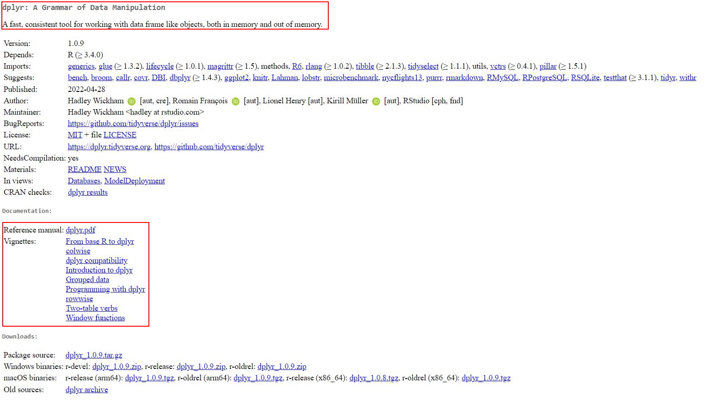

1 Installing & Understanding R/R Studio
Please make sure you have the most recent versions of R and RStudio installed before we begin.
1.1 Installing R
If you have never installed R before, please watch one of these two video instructions:
When you are ready to install R, use Cran to install the newest version of R (4.2.0, “Vigorous Calisthenics”). You’ll have to specify your operation system to download the right version:
1.2 Installing R Studio
Install R Studio next. R Studio is a graphical interface that makes programming with R much easier. The newest version of R Studio (2022.02.2+485) can be downloaded via this Link.
1.3 Updating R and R Studio
If you have already installed R and RStudio, please update your version to the latest version. This way, we’ll all know that our versions are compatible.
1.3.1 On Windows
Updating on Windows is tricky. Therefore, you can use a package called installr, which helps you manage your update. First, install the installr package. Use the following code in the RGui console (not RStudio!):
# installing/loading the package:
if(!require(installr)) {
install.packages("installr");
require(installr)
} #load / install+load installrAfter you have installed or loaded the installr package, let’s start the updating process of your R installation by using the updateR() function. It will check for newer versions, and if one is available, will guide you through the decisions you’d need to make:
# using the package:
updateR()Finally, update R Studio. Updating RStudio is easy, just open RStudio and go to Help > Check for Updates to install a newer version.
1.3.2 On MAC
Go to CRAN and install the newer package installer.
After that update R Studio. Updating RStudio is easy, just open RStudio and go to Help > Check for Updates to install a newer version.
1.4 Packages
While Base R, i.e., the standard version of R, already includes many helpful functions, you may at times need other, additional functions. For example, if we want to perform tidy text analysis in R we’ll need to use specific packages including additional functions.
Packages are sets of topic-specific functions that build on the Base R functions..
1.4.1 Installing packages
To use a package, you have to install it first. Let’s say you’re interested in using the data management package dplyr. You may install the package on your machine with the command install.packages(), but you have to provide the name of the package you want to install.
install.packages("dplyr")The package is now installed and accessible on your computer. We just need to call install.packages() once for any package. After that, all you have to do is open R and activate the package that has already been installed.
1.4.2 Activating packages
A package must be activated in each session before it is used in the code. As a result, before running your code, you should activate the packages that you require: Use the library()_ command for this by providing the name of the package that you want to activate:
library(dplyr)You can also use the name of the package followed by two colons :: to activate a package directly before calling one of its function. For instance, I do not need use to activate the dplyr package (by using the library() function) to use the function summarize() if I use the following code:
dplyr::summarize()1.4.3 Getting information about packages
How do we utilize the package now that it’s installed and activated? You can get an overview of a package’s functions by consulting its corresponding “reference manual” or, if available, its “vignette” (tutorials on how to use selected functions for the corresponding package) provided by the package’s author on a website called “CRAN.”
Google is the best place to look for these manuals/vignettes: For example, if you google CRAN ProcessR, you’ll find the following website:
| Image: Cran Overview dplyr package |
|  |
The first paragraph (red-circled region) provides an overview of potential uses for this package. The reference manual and the vignette are linked in the second red-circled region. You can go through the reference documentation to get a sense of the different functions available in the dplyr package.
1.5 Take-Aways
- Installing: install R & RStudio via CRAN
- Packages: expand
Base Rviainstall.packages()and activate the packages vialibrary()(each session!)